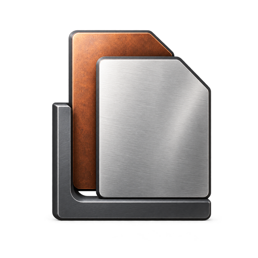
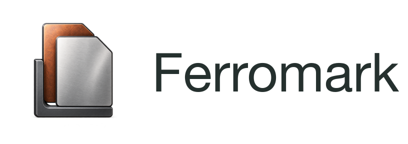
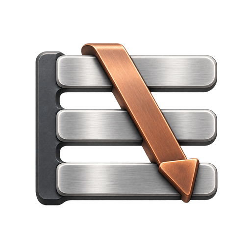
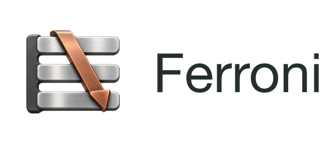

Two instruments.
Two distinct signatures.
Satin steel, graphite and a measured oxide accent. Compact product symbols for Ferromark and Ferroni, with broad silhouettes that remain readable at 32–64 pixels.
Ferromark
Document leaves in a registration corner. Source and rendered output, aligned.



Symbol and wordmark

Actual output sizes


These samples are shown at their real CSS size. The ICO contains 32, 48 and 64px frames.
Ferroni
Parallel pattern tracks with one scanning pointer. Many patterns, one next match.



Symbol and wordmark

Actual output sizes


These samples are shown at their real CSS size. The ICO contains 32, 48 and 64px frames.